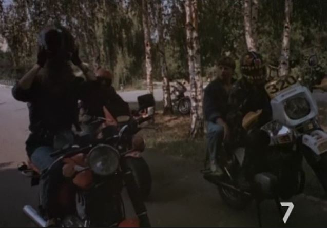
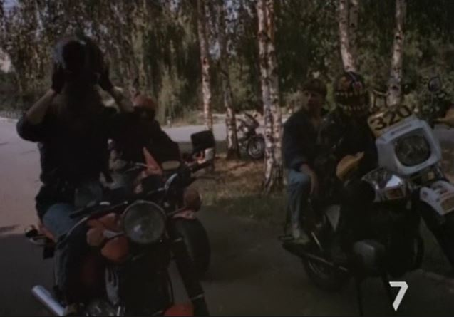
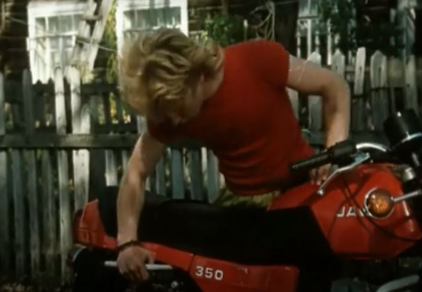
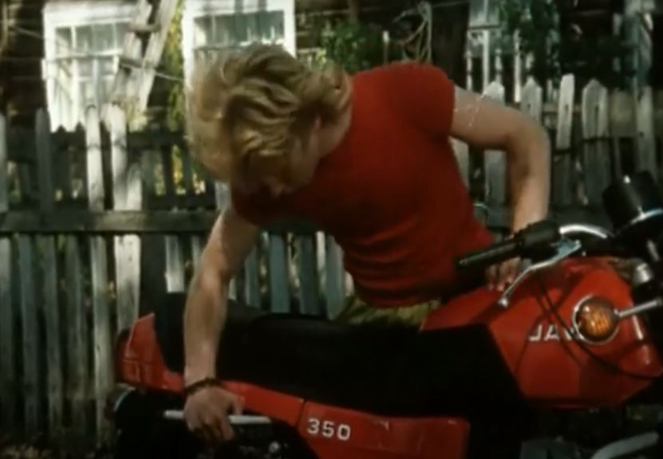

Видео на похожие темы
Фанат 2

1990 p. Страна: СССР


 


После финального боя, выигранного непокорным каратистом,
Мэтр устраивает
кровавую разборку, лично убивая первого учителя Малыша. Сам Малыш, истекая кровью, с трудом бежит.
Мафия посчитала его погибшим, и появление Малыша на пляже Одессы стало для Мэтра неприятным и сюрпризом. Он слишком много видел и должен умереть...
кровавую разборку, лично убивая первого учителя Малыша. Сам Малыш, истекая кровью, с трудом бежит.
Мафия посчитала его погибшим, и появление Малыша на пляже Одессы стало для Мэтра неприятным и сюрпризом. Он слишком много видел и должен умереть...
У фильме обнаружено: Ява, Чезет.
Бриллиантовая рука

1969 p. Страна: СССР


Агент-перевозчик контрабанды Геша, он же Геннадий Петрович Козодоев (Андрей Миронов),
отправляется в зарубежный круиз на теплоходе «Михаил Светлов».
Герой по распоряжению Шефа (Николай Романов) должен доставить в Советский Союз золото и бриллианты.
У фильме обнаружено: Ява-350 с коляской.
Приключения Электроника

1979 p. Страна: СССР


Действие картины "Приключения Электроника" разворачивается в конце 1970-х
-
начале 1980-х годов. Гениальный советский инженер-кибернетик профессор Громов создал робота Электроника (Владимир Торсуев), который обладал выдающимися способностями, но внешне ничем не отличался от обычного мальчишки. При работе
над обликом андроида профессор взял за образец фотографию шестиклассника Сережи Сыроежкина (Юрий Торсуев), помещенную на обложке популярного журнала.
О создании Электроника стало известно главарю иностранной преступной группировки Стампу (Владимир Басов). Мафиози решил заполучить робота, с помощью которого он надеялся совершать кражи предметов искусства из музеев, и послал за ним в СССР своего подручного Урри (Николай Караченцов).
начале 1980-х годов. Гениальный советский инженер-кибернетик профессор Громов создал робота Электроника (Владимир Торсуев), который обладал выдающимися способностями, но внешне ничем не отличался от обычного мальчишки. При работе
над обликом андроида профессор взял за образец фотографию шестиклассника Сережи Сыроежкина (Юрий Торсуев), помещенную на обложке популярного журнала.
О создании Электроника стало известно главарю иностранной преступной группировки Стампу (Владимир Басов). Мафиози решил заполучить робота, с помощью которого он надеялся совершать кражи предметов искусства из музеев, и послал за ним в СССР своего подручного Урри (Николай Караченцов).
У фильме обнаружено: Ява-350/634, еще замечен мопед собран из деталей частично
от Верховины-3, частично от Верховины-4.
Убийство на Монастырских прудах (Адвокат)

1990 p. Страна: СССР


 

В подмосковном городке, где живут пятеро друзей: Олег Чепцов-«Чепец» (Ян Пузыревский),
Николай Варенцов-«Чайник» (Денис Сердюков),
Иван Звонарёв-«Фонарь» (Даниил Лапигин), Петр Зюзин-«Зюзик» (Александр Семенов) и его сестра Света (Вера Лапшова), наступает осень.
Олег поступил в московский институт и осенью готовится уехать в столицу, а Чайника призывают в армию.
За 2 дня до отъезда друзья решают посидеть своей компанией на природе.
Ребята выезжают из города на своих мотоциклах, скидываются на выпивку.
Чайник отправляется к местному спекулянту Алексею Яковлеву-«Асе» (Виктор Павлов), продающего спиртное в своём доме.
Ася впускает Чайника в дом, и начинается яростный торг. Ася, у которого оставалось всего 3 бутылки сухого вина, согласен продать их по
цене 4-х или не намерен продавать ничего.
Чайник соглашается, но после того, как Ася выходит из комнаты за вином, крадёт из его холодильника бутылку водки и убегает.
Вскоре на том же месте был найден труп. И Чайника подозревают в убийстве.
Стервятники на дорогах

1990 p. Страна: СССР

Действие фильма "Стервятники на дорогах" происходит в начале 90-х годов прошлого века,
страну захлестнула волна преступности. Криминальные структуры брали под
свой контроль все, что приносило хоть какой-то доход, и правоохранительные органы уже не могли остановить волну тотального бандитского беспредела, а зачастую сами сотрудники этих органов становились активными членами преступных сообществ.
На дорогах бандиты занимались вымогательством, требуя от водителей грузовых фур
плату за безопасность и сохранность груза, а иногда и сами грабили фуры, убивая дальнобойщиков.
свой контроль все, что приносило хоть какой-то доход, и правоохранительные органы уже не могли остановить волну тотального бандитского беспредела, а зачастую сами сотрудники этих органов становились активными членами преступных сообществ.
На дорогах бандиты занимались вымогательством, требуя от водителей грузовых фур
плату за безопасность и сохранность груза, а иногда и сами грабили фуры, убивая дальнобойщиков.